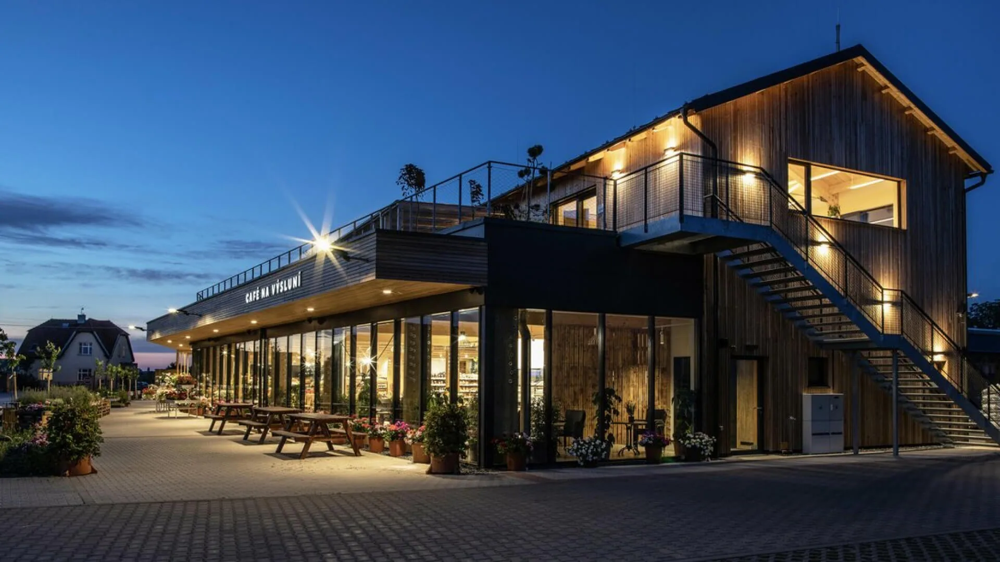
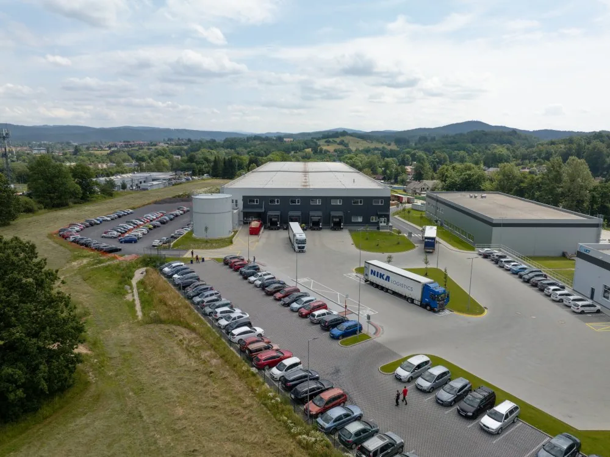

Novostavby
Novostavby bytových, komerčních, administrativních a polyfunkčních objektů.

AUSTIS Pozemní stavby
Realizujeme rezidenční, komerční a provozní objekty pro developery, investory a provozovatele budov. Zaměřujeme se na generální dodávky novostaveb a rekonstrukcí většího rozsahu. Naše zkušenosti představují dokončené i právě probíhající realizace.
AUSTIS Pozemní stavby
Realizujeme rezidenční, komerční a provozní objekty pro developery, investory a provozovatele budov. Zaměřujeme se na generální dodávky novostaveb a rekonstrukcí většího rozsahu. Naše zkušenosti představují dokončené i právě probíhající realizace.
Novostavby bytových, komerčních, administrativních a polyfunkčních objektů.
Modernizujeme a přestavujeme stávající budovy a areály. Postup navrhujeme podle technického stavu objektu, vašich priorit a rozpočtu. U využívaných budov posoudíme možnosti etapizace a prací za provozu.
Představujeme výběr dokončených i právě realizovaných staveb.
Nástavba, přístavba a celkové stavební úpravy původního rekreačního objektu.
V realizaci
Více o realizaci
Novostavba polyfunkčního objektu s prodejnou, kavárnou, bistrem a bytem pro soukromého investora.
Dokončeno
Více o realizaci
Výstavba výrobně administrativní a skladové haly s infrastrukturou.
Dokončeno
Více o realizaciProbereme váš stavební záměr, lokalitu, dostupné podklady a požadovaný termín. Upřesníme rozsah spolupráce a další kroky přípravy nabídky.
Podle zadání připravíme postup prací, harmonogram a rozpočet. Vyjasníme také činnosti, které zajistíme my, a součinnost potřebnou od investora.
Zajistíme kompletní realizaci stavby. O postupu, nákladech a otázkách, které vyžadují vaše rozhodnutí, vás pravidelně informujeme dohodnutou formou.
Předáme dokončené dílo. Rozsah součinnosti při kolaudaci a navazujících činnostech vychází ze smluvního zadání.
Pošlete nám základní zadání vašeho stavebního záměru. Prostudujeme vaše podklady a dohodneme nezávaznou konzultaci a další postup.